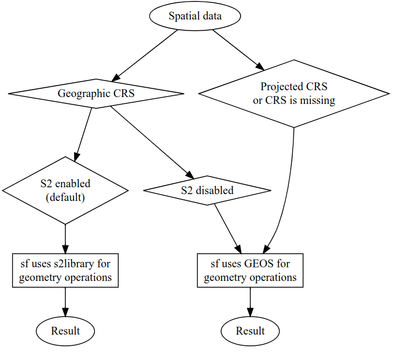
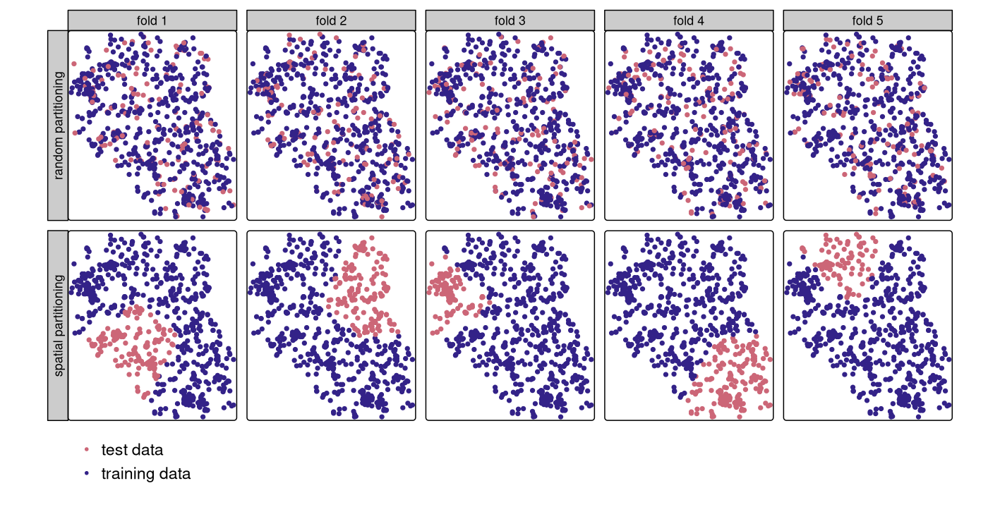

Second edition of Geocomputation with R is complete
We are excited to announce that the second edition of Geocomputation with R is (almost) complete. It took us about three years to update and improve the book. This blog post summarizes the process and lists things we added and changed. It also mentions what is left to do.
Geocomputation with R
If you are not familiar with the book, here is a brief introduction (skip this section if you already know the book). Geocomputation with R (https://r.geocompx.org/) is a book about geographic data analysis, visualization, and modeling in a reproducible manner. It is aimed at people who want to learn how to use R to work with geographic data, so the book is designed to be accessible to people with no prior experience in spatial data processing in R.
The book is divided into three parts: foundations, extensions, and applications. The first part covers the basics of spatial data and the R ecosystem for working with it. It shows how to read, write, and manipulate both spatial vector and raster data using packages such as sf and terra. This part also explains the topics of spherical geometries, geographic data sources, and coordinate reference systems. The second part of the book covers more advanced topics, such as customized mapping, connecting R with GIS software and cloud services, and machine learning for spatial data. The third part of the book is about applications of geocomputation, including transportation, geomarketing, and ecology. It shows how to use R to solve real-world problems in these fields.
The book is designed to be practical and hands-on: it contains many examples and exercises. The book is also open-source, so you can contribute to it by submitting a pull request or opening an issue on GitHub.
What are the biggest changes?
The first edition of the book was published in 2019. Since then, the R ecosystem has changed a lot: the terra package was introduced for working with raster data, the sf package started to support operations on spherical geometries, proj-string used to define coordinate reference systems was replaced by WKT2 and SRID, and a new major version of the tmap package was created. Many other packages were also updated, and new ones were made. The second edition of the book reflects these changes.
Writing the second edition of the book was a long and complex process. We made about 2,500 commits to the book’s repository, which resulted in more than 23,000 changed lines of code and prose.
There are some major changes in the second edition of the book that affect the structure and content of the whole book. One such change is the replacement of the raster package with the terra package for working with raster data. The terra package is similar to its predecessor, but it is generally faster and more adjusted to working with large datasets. Its functions are often similar to those in raster, but there are also some differences that needed to be addressed in the book.
Another major change is the addition of information about spherical geometry operations available in the sf package in a few places in the book. It includes new sections in Chapter 2 and Chapter 7. Nowadays, the sf package supports operations on spherical geometries by default when the input data is in a geographic coordinate reference system. This has a big impact on spatial operations, such as buffering, distance calculations, and area calculations, and it is important to understand how to use it properly.

Spatial operations related to projections and coordinate reference systems in many software tools use a library called PROJ. This library underwent breaking changes that started in 2018 and affected many spatial data workflows. The second edition of the book reflects these changes by using the new WKT2 and SRID format for defining coordinate reference systems, and by updating the examples, explanations, and exercises to use the new format.
Most figures in the second edition were remade using version 4 of the tmap package. The new package version has a different syntax and new features, allowing for more customization and better-looking maps. Therefore, we also updated the whole mapping chapter to reflect the package changes.
Other general changes in the book include the addition of a new website with the book solutions, replacing the magrittr pipe %>% with the native R pipe |>, and our new book cover.
What’s new?
Many major new additions are also present in the book’s second edition. We added several new graphs to ease the understanding of the concepts, such as the one below that shows the process of creating an sf object from hand.

The “Bridges to GIS software” chapter was rewritten and expanded, with the new packages made available since the first edition, such as qgisprocess, Rsagacmd, and rgrass. Similarly, the “Statistical learning” chapter was redone, with the new code based on the mlr3 package.

The “Transportation” chapter was also completely rewritten, with new sections on routes, and route networks.
The book also gained many new sections, including ones on construction and manipulation of sf object using the sfheaders package, on smoothing the boundaries of polygon and linestring geometries using the smoothr package, on creating geographic metadata, and on connecting R with cloud services.
The above changes are just a few examples of the many new things that were added to the book – there are many more new sections, examples, and exercises!
What’s next?
We are now in the final stages of the book production. The publisher provided us with the proofread of the book1, and we are now incorporating the changes into the book.
The book will be published in January 2025, and some information about it can be found at the publisher’s website. Of course, the book will remain open-source, and you can access it for free at https://r.geocompx.org/.
How to connect and acknowledgments
If you want to connect with us, you can join the Geocomputation with R discord channel. You can find us on GitHub, where you can open an issue or submit a pull request to the book’s repository. We also use the #geocompr hashtag on social media to share news and updates about the book, and encourage you to do the same.
This work was certainly not possible without the interest and activity of many people. Several people contributed to the text and code, many other people raised issues and suggested improvements, and many more people provided feedback and support. The list is very long – you can find it at https://r.geocompx.org/preface#acknowledgements. We feel very grateful for all the help we received from the community. Thank you!
Footnotes
We are very grateful for this work – it improves the book’s consistency and fixes various grammar mistakes and typos.↩︎
Reuse
Citation
@online{nowosad,_robin_lovelace,_jannes_muenchow2024,
author = {Nowosad, Robin Lovelace, Jannes Muenchow, Jakub},
title = {Second Edition of {*Geocomputation} with {R*} Is Complete},
date = {2024-10-06},
url = {https://geocompx.org/post/2024/geocompr2-bp3/},
langid = {en}
}